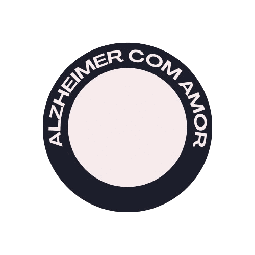

Saiba Mais
Saúde Mental
Curadoria
Sobre Nós
O que é?
Sintomas
Diagnóstico
Tratamentos
A Doença de Alzheimer (DA) é um transtorno neurodegenerativo progressivo e fatal que se manifesta pela deterioração cognitiva e da memória, comprometimento progressivo das atividades de vida diária e uma variedade de sintomas neuropsiquiátricos e de alterações comportamentais. A doença instala-se quando o processamento de certas proteínas do sistema nervoso central começa a dar errado. Surgem, então, fragmentos de proteínas mal cortadas, tóxicas, dentro dos neurônios e nos espaços que existem entre eles. Como consequência dessa toxicidade, ocorre perda progressiva de neurônios em certas regiões do cérebro, como o hipocampo, que controla a memória, e o córtex cerebral, essencial para a linguagem e o raciocínio, memória, reconhecimento de estímulos sensoriais e pensamento abstrato.
O que é Alzheimer: